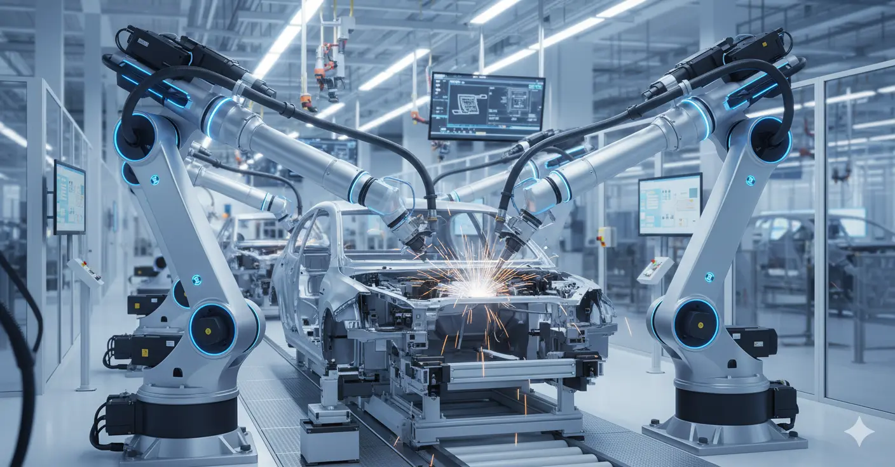
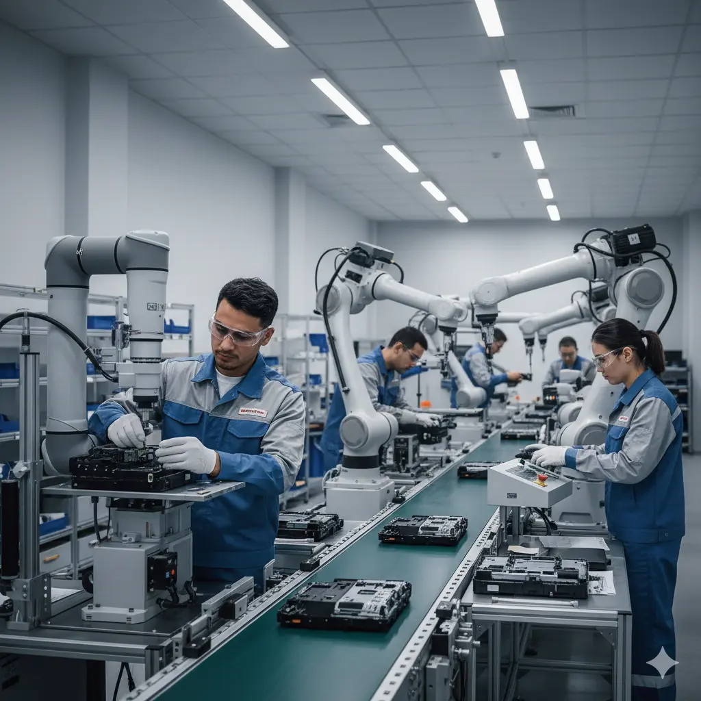

Programación de PLC
Desarrollamos la automatización de procesos y líneas de producción mediante lógica de control robusta. Optimizamos secuencias complejas, garantizamos la continuidad operativa y facilitamos diagnósticos rápidos para minimizar los tiempos muertos en planta.

